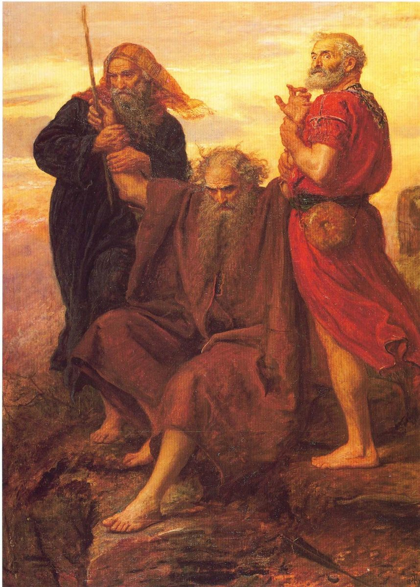

Éxodo 17 — La Traducción Mister

⚠ La figura de rojo a la derecha es AARÓN, no Hur — fácil de confundir, ya que Hur es el de la izquierda, de túnica oscura, todavía con su propio bastón en la mano. Millais pintó esta obra en lo que la crítica llama un punto de inflexión en su carrera, retrabajando el lienzo una y otra vez («raspando y repintando la superficie») para lograr el agotamiento exacto. El crítico de la época F. G. Stephens elogió justo esa decisión: el cuadro enfrenta «la voluntad inquebrantable y firme de Moisés» con «el agotamiento físico y emocional de sus compañeros» — la carne vieja y desnuda haciendo el trabajo, no un héroe triunfante. Algunos lectores del cuadro han notado en los brazos alzados y extendidos un eco inconfundible de la iconografía de la crucifixión, sufrimiento y victoria pintados con el mismo gesto. Millais no muestra nada de la batalla misma — solo tres hombres en un cerro, observando lo que sus propios brazos alzados están decidiendo.
{kind=link}
Notas del traductor
Cada nota explica la decisión de esta traducción y la compara con el estante en español: la Reina-Valera y la NVI. Las citas de versiones con derechos reservados se limitan a frases cortas.
Refidim, y una murmuración que este libro ya usó una vez
Refidim quizá signifique «apoyos» o «lugares de descanso» — oportuno, ya que aquí es donde Aarón y Hur van a APOYAR físicamente los brazos de Moisés más adelante en este mismo capítulo (v. 12), un pequeño eco que el texto no comenta.
⚠ «Murmuró» (v. 3) es la misma raíz hebrea que cayó nueve veces en el capítulo anterior — el pueblo que acaba de recibir pan diario del cielo vuelve a tener sed a los pocos días que el texto da a entender, y busca la misma palabra.
Una prueba nombrada dos veces, en dos palabras distintas
Moisés pregunta «¿por qué TENTÁIS a Jehová?» (v. 2) antes de que se mueva una sola gota de agua — la acusación precede al milagro. La misma vara que convirtió el Nilo en sangre (7:20) ahora golpea una roca en vez de un río, sacando agua de la piedra en vez de envenenar una fuente de vida; el texto parece querer que el mismo objeto haga lo contrario de antes.
⚠ El nombre del lugar cae dos veces, en dos raíces distintas: Masah (de nissah, PROBAR) y Meriba (de riv, RENCILLA, el mismo verbo que usó el v. 2 — «¿por qué altercáis conmigo?»). Un solo suceso, un solo lugar, y un nombre construido con los dos cargos a la vez: el pueblo tentó a Dios y altercó con Moisés, y el mapa recuerda ambos. El lugar reaparece — Números 20 cuenta una historia casi idéntica en OTRA Meriba, ya al final de los años del desierto, la que le cuesta a Moisés la entrada a la tierra.
Al nombrar el lugar, RV60 se queda cerca del hebreo, «por la rencilla... porque tentaron a Jehová»; NVI lo expande en explicación, «los israelitas habían probado al Señor y altercado con él» — la misma doble acusación, con el orden invertido y hecha más explícita.
El primer Josué, y un hombre que lleva el nombre de un apoyo
⚠ Esta es la primera aparición de Josué en toda la Biblia — presentado sin genealogía ni historia previa, ya de confianza para mandar tropas mientras Moisés sube a un cerro. Su nombre en este punto es probablemente todavía HOSEA («él salva»); Moisés lo renombra JOSUÉ (YEHOSHUA), incorporando el nombre divino, solo más adelante (Números 13:16). Este capítulo usa el nombre posterior un capítulo antes de tiempo.
Hur también aparece aquí por primera vez, ascendido directamente a la cumbre junto con Aarón y sin explicación alguna; la tradición posterior (no el texto mismo) lo hace esposo de Miriam y padre de Caleb. Queda a cargo del campamento, junto con Aarón, la próxima vez que Moisés sube a un monte (24:14, ya en estas páginas) — los mismos dos nombres, la misma tarea.
La orden de Moisés a Josué (v. 9) también varía entre estantes: RV60 pone «escógenos VARONES», el sustantivo concreto; NVI pone «escoge algunos de NUESTROS HOMBRES», más perifrástico y en primera persona plural donde el hebreo dice simplemente «para nosotros».
Una batalla que depende de una imagen, no de una estrategia
No se describe táctica alguna — ni flanqueo, ni formación. El capítulo declara el mecanismo sin rodeos y lo deja así: mano en alto, Israel gana; mano abajo, Amalec gana. ⚠ Si la mano alzada es intercesión, una señal visible para las tropas, o simplemente la prueba de que el resultado depende de Jehová y no del brazo espadachín de Josué, el texto no lo resuelve — el v. 13 le da a Josué el trabajo de espada sin rodeos («deshizo a Amalec... a filo de espada») en el versículo siguiente, así que el capítulo no lee la mano como sustituto de la pelea, solo como lo que la decide.
El verbo de vaivén (v. 11) también cambia de estante: RV60 mantiene «Israel PREVALECÍA... prevalecía Amalec», repitiendo el mismo verbo militar clásico en ambos lados de la frase; NVI lo parafrasea como «la batalla SE INCLINABA en favor de» — la misma imagen de vaivén, con un verbo más moderno.
Moisés sentado sobre una piedra mientras dos hombres le sostienen los brazos es un detalle físico pequeño, casi incómodo, para que un texto tan comprimido se moleste en conservarlo — prueba, quizá, de que el cansancio y el liderazgo no son aquí cosas opuestas.
Una orden de escribir, dirigida a un hombre que aún no es líder
«Escribe esto... y di a Josué» es la primera orden registrada de Israel de conservar un suceso por escrito precisamente para que se siga sabiendo después — leído A Josué en vez de escrito POR él, ya que aquí es un comandante de batalla, todavía no el hombre que llevará la conquista. La frase que Dios quiere conservada es total: la memoria de Amalec del todo raída, expresada como una promesa que sobrevive a cualquier batalla concreta. Deuteronomio 25:17-19 convierte esto después en ley formal — recuerda lo que hizo Amalec, y no lo olvides — uniendo memoria y mandato en una sola instrucción.
Un hapax legomenon en la última línea
«Jehová es mi enseña» (v. 15, nes) nombra el altar con la misma imagen que el v. 16 quizá esté citando, o quizá no. ⚠ El hebreo del v. 16 es de los más difíciles de la Torá: kes, traducido aquí «trono», aparece EXACTAMENTE UNA VEZ en toda la Biblia hebrea. Los lexicógrafos no se ponen de acuerdo sobre si es una forma contraída de kisse (trono) o un desliz de copista por nes (enseña) — la misma palabra con que se acaba de nombrar el altar, un versículo antes. RV60 traduce «el trono de Jah», siguiendo el texto tal como está; NVI traduce «el trono del Señor» con un giro distinto, «levantó su mano contra el trono del Señor», haciendo de Amalec el sujeto de la frase en vez de dejarla como exclamación sin sujeto claro. Esta traducción sigue el texto consonántico de la forma más literal que el español permite y deja la ambigüedad tal como el hebreo la deja.
Notas sobre esta traducción
Decisiones. El v. 16 se deja deliberadamente sin resolver — «una mano sobre el trono de Jah» — en vez de suavizarlo hacia alguna de las lecturas del estante, ya que la palabra hebrea misma es un hapax legomenon sobre el que los lexicógrafos no coinciden. Lun (v. 3) se traduce de nuevo «murmurar», igual que en Éxodo 16, para mantener visible la repetición de la misma palabra entre capítulos.
⚠ Nota sobre el orden: traducido en secuencia —el camino desde Refidim continúa en Éxodo 18.